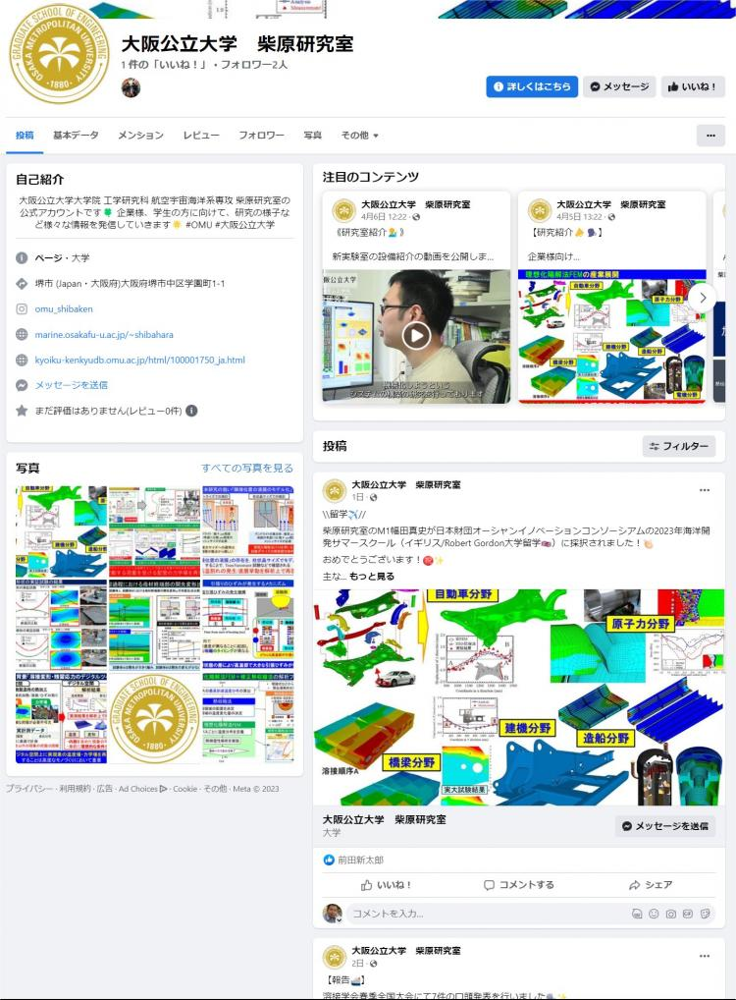
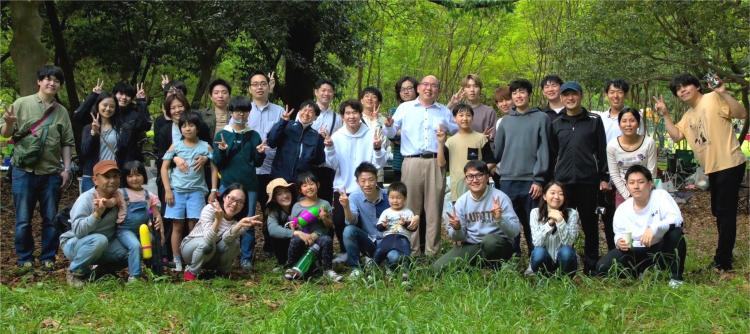
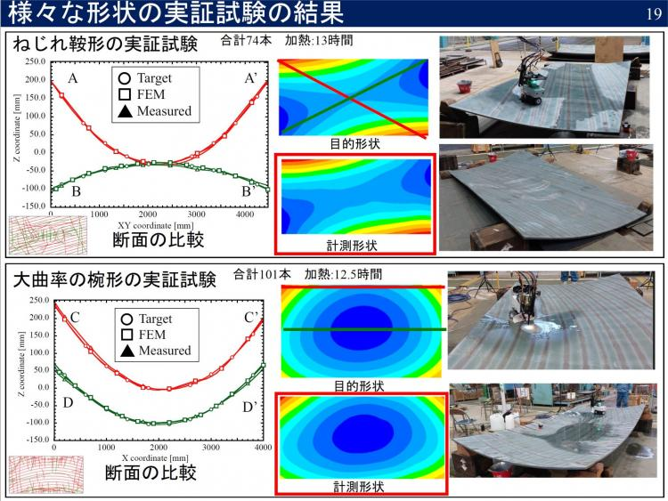
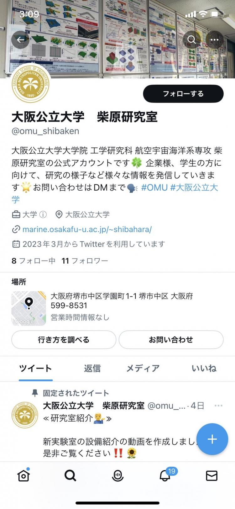
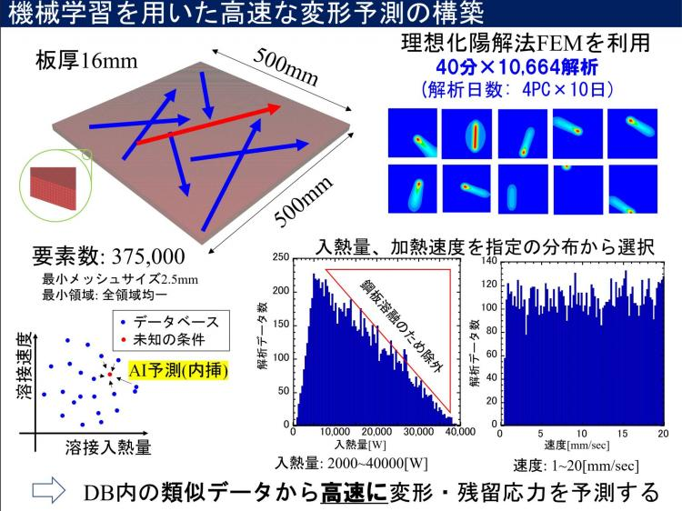
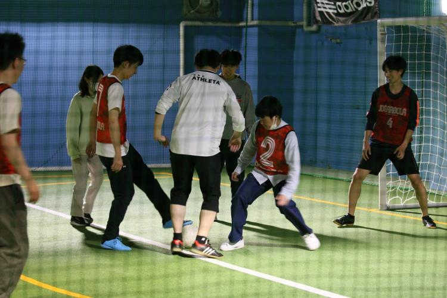

年度別検索
カテゴリ
2024年3月29日
長い間お世話になりました熊岡さんが研究室をご卒業されました・・・
2024年3月27日
柴原研究室が M1廣瀬天空さん、B4四方皓大さん が 2024年度 大阪公立大学 工学研究科/工学域 英語顕彰 を受賞しました。
2024年3月24日
柴原研究室 B4四方皓大さん、生島研究室 M2山内悠暉さん が2023年度 大阪公立大学 工学域長/工学研究科長 表彰 を受けました。
2024年3月22日
柴原研究室 B4山邉晃瑠 さん、B4市川亮大 さん、B4四方皓大 さん が大阪府立大学 海洋システム工学課程 優秀論文賞を受賞しました。
柴原研究室 M2手銭永遠 さん が大阪公立大学 海洋システム工学分野 優秀論文賞、生島研究室 M2山内悠暉 さん が 奨励賞 を受賞しました。
大阪公立大学 工学部/研究科 海洋システム工学科/専攻 学位記授与式 が行われました。
2024年3月21日
柴原研究室 B4市川亮大、B4四方皓大 が 2023年度 大阪府立大学 学長表彰を受けました。
2024年3月19日
「研究シーズの宝庫－大阪公立大学からの情報発信 第141回テクノラボツアー」が行われ、柴原正和 准教授が登壇しました。
2024年3月17日
3/17に新B4生歓迎のボーリング大会を開催しました。
2024年3月10日
読売新聞 鹿児島版 に「理想化陽解法FEM」に関する 柴原正和 准教授のインタビュー記事が掲載されました。
2024年3月7日
日本製鋼所 橋場大輔 様らと 生島一樹 准教授、河原充 特任研究員、柴原正和 准教授 の共著であった「残留応力に及ぼす変態塑性の影響」に関する溶接学会への投稿論文が採択されました。
2024年3月6日
日本クルーズ&フェリー学会「パンスタードリーム」乗船会に柴原研究室 M1廣瀬天空、M1松岡諒、B4市川亮大 が参加し、韓国釜山を訪問しました。
2024年3月4日
計算科学研究所第9回交流会が行われ、柴原研究室 D1王聞達さんが発表しました。
山内悠暉さん(生島研究室)が2023年度溶接学会奨学賞を受賞しました。
2024年3月1日
柴原正和 准教授、生島一樹 准教授 前田新太郎 特任助教 が応募していた2024年度科学研究費補助金(基盤B、基盤B、若手研究)の採択が決定しました。
2024年2月22日
柴原正和准教授、生島一樹准教授、河原充特任研究員、河尻義貴さん(現JMU)、沖見優衣さん(現川崎重工業)が「修正コンター法の開発」 に関する国際特許(アメリカ合衆国)を取得しました。 2024/02/22
2024年2月15日
2/13ｰ15の3日間、大阪公立大学 海洋システム工学科/分野 の卒業論文/修士論文 の発表会が行われております。
2024年2月7日
手銭さん、児玉さん、桃木さんのお誕生日会を行いました！
2024年2月2日
第140回テクノラボツアーにおいて、生島一樹 准教授とD1加藤拓也さんが講演し、M1廣瀬天空さんとM1油井達哉さんがポスター発表を行いました。また、前田新太郎 特任助教が施設紹介を行いました。
2024年1月27日
Ramy特任准教授らがJournal of Constructional Steel Research (IF4.1)に投稿していた、疲労亀裂進展に関する論文がPublishされました。
2024年1月24日
大阪大学中之島センターで行われる「溶接学会 春季全国大会」に、柴原研究室から6件のエントリーを行いました。
2024年1月20日
前田新太郎 特任助教が「2024年度 イノベーションアカデミーワークショップ」にて発表しました。
2024年1月17日
四方皓大さん、市川亮大さんの受賞が大阪公立大学工学部HPに掲載されました
2024年1月13日
研究室での取り組みの様子を紹介します。
2024年1月9日
生島一樹 准教授が「日本溶接協会 2024年度次世代を担う研究者助成事業」に採択されました。
2024年1月6日
第41回 日本ロボット学会におけるNEDO主催オープンフォーラムにおいて柴原研究室D1加藤拓也さんが講演した内容が、YouTube サイトにて公開されました。
2024年1月4日
柴原正和准教授と生島一樹准教授が「機械学会誌 CMD Newsletter」に寄稿していた「理想化陽解法FEMによる溶接力学シミュレーション」に関する解説記事がPublishされました。
2024年1月1日
謹賀新年
2023年12月27日
柴原研究室・生島研究室合同の秋季中間発表会が12/23と12/27に行われました。
JMU津を訪問し、JMU(株)と取り組んでいるNEDOインテグレート「AI線状加熱の開発」に関する実験を行いました。
2023年12月22日
四方皓大さんが「溶接学会秋季大会 軽金属溶接協会ポスター賞」を受賞し、市川亮大さんと四方皓大さんが「軽金属溶接協会 優秀発表賞」を受賞しました。
2023年12月21日
「日本船舶海洋工学会 関西支部 学生研究発表会」において、柴原研・生島研から幅田さん、廣瀬さん、四方さん、山邉さん、尾崎さんの5名が発表しました。
2023年12月17日
柴原正和准教授と生島一樹准教授が「検査技術」に寄稿していた「デジタルツインシステムの開発」に関する解説記事がPublishされました。
2023年12月14日
12月14日は前田新太郎先生の誕生日でした。
2023年12月8日
今日は柴原先生の49歳のお誕生日でした。
2023年12月6日
市川亮大さんと四方皓大さんが「軽金属溶接協会 優秀発表賞」を受賞しました。
柴原研究室 四方皓大さんが 「溶接学会秋季大会 軽金属溶接協会ポスター賞」 を受賞しました。
2023年12月4日
第10回大阪公立大学・和歌山大学 工学研究シーズ合同発表会がI-siteなんばで行われ、生島一樹 准教授 が講演を行いました。
2023年12月3日
研究室旅行2日目は京都嵐山に観光に行きました。
柴原研究室・生島研究室合同で研究室旅行に来ました。
2023年11月29日
「溶接学会 溶接構造シンポジウム2023」 において、柴原研究室・生島研究室から15件の講演が行われました。
2023年11月28日
「軽金属溶接協会 2023年度研究成果発表会」において、柴原研究室B4四方皓大、市川亮大 が発表しました。
2023年11月24日
2023年度 構造ダイナミクス研究所 実験室見学ツアー が開催され、溶接ロボット実験室での実験の様子が紹介されました。
2023年11月17日
第16回大阪公大－サノヤス 技術交流会に、 生島一樹 准教授、四方皓大さん (#柴原研究室)、 佐々木駿伍さん(生島研究室)、諏訪部圭夏さん(生島研究室) が参加しました。
2023年11月10日
コベルコ溶接テクノ社と柴原研究室の共同研究の成果として、修正コンター法を用いた残留応力計測が事業化されました。
2023年11月3日
M2手銭永遠さんが大阪公立大学 学長表彰を受けました。
2023年10月28日
柴原正和准教授、本藤裕佑さんが大阪大学、小松製作所との共同研究において、 「チタン添加による割れにくい炭素鋼の開発」 に関する特許を取得しました。
2023年10月24日
海洋システム工学科イベントであるマリンカフェにおいて、柴原研究室出身の有村翼さん、沖見優衣さん、河尻義貴さんが登壇しました。
2023年10月21日
生島一樹 准教授らが応募していた「先端加工機械技術振興協会2023年度研究助成(先端加工機械技術に関する研究に対する研究助成)」が決定しました。
2023年10月15日
柴原研究室・生島研究室合同の秋季中間発表会が行われました。
2023年10月6日
「溶接構造シンポジウム2023」に柴原研究室から15件の講演発表をエントリーしました。
2023年10月2日
生島一樹准教授らが応募していた「日本溶接協会 2023年度 研究テーマ指定(金属を材料とした積層造形技術)助成事業」の助成が決定しました。
2023年9月29日
加藤拓也さんが日本学術振興会 特別研究員(DC2) に採用内定となりました。
2023年9月27日
前田新太郎特任助教らがMathematical Modelling of Weld Phenomenaに投稿していた、溶接高温割れシミュレーションに関する論文がPublishされました。
2023年9月23日
スコットランドRobert Gordon大学に留学していたM1幅田真史さんが約1ヶ月の留学期間を終えて無事に帰国しました。
2023年9月20日
大阪公立大学大学院工学研究科 国際シンポジウムが大阪国際会議場(グランキューブ大阪)で行われ、柴原研究室D1加藤拓也さんとD1王聞達さんがポスター発表を行いました。
2023年9月18日
Theoretical and Applied Fracture Mechanicsに投稿していた、疲労亀裂進展に関する論文がPublishされました。
2023年9月15日
溶接学会2023年度秋季全国大会が富山大学五福キャンパスで行われ、柴原研究室から6件の講演を行いました。
2023年9月14日
溶接学会2023年度秋季全国大会が富山大学五福キャンパスで行われ、柴原研究室B4四方皓大さんと生島研究室M1油井達哉さんがポスター発表を行いました。
2023年9月12日
第41回日本ロボット学会学術講演会が仙台国際センター(宮城県仙台市)で行われ、柴原研究室 D1加藤拓也さんが講演を行いました。
2023年8月29日
柴原研究室 B4市川亮大さんとB4山邉晃瑠さん が日本保全学会 第19回学術講演会「学生セッション」において奨励賞を受賞しました。
2023年8月28日
日本保全学会第19回学術講演会が東北大学(仙台)で行われ、柴原研究室 B4市川亮大さんとB4山邉晃瑠さんが講演およびポスター発表を行いました。
2023年8月25日
(株)構造計画研究所と柴原研究室とのワークショップを開催し、柴原先生および前田新太郎特任助教が登壇しました。
2023年8月24日
スコットランドRobert Gordon大学に留学中の柴原研究室幅田真史さんから留学体験記について報告がありました。
2023年8月18日
計算科学研究所第8回交流会が行われ、柴原研究室 D1加藤拓也さんと特任研究員 木谷悠二さんが発表しました。
2023年8月17日
木谷悠二 特任研究員らがJournal of the Japan Welding Societyに投稿していた2本の論文が掲載されました。
2023年8月16日
松岡諒らがデジタルツインに関するパラメータ推定に関する国際特許出願(PCT出願)を行いました。
2023年8月11日
Ramy特任准教授らがInternational Journal of Pressure Vessels and Pipingに投稿していた疲労亀裂進展に関する論文がPublishされました。
2023年8月9日
柴原研究室 前田新太郎 特任助教、李志浩らがJournal of the Japan Welding Societyに投稿していた3本の論文が掲載されました。
柴原研究室 幅田真史さんのスコットランド留学の壮行会が行われました。
2023年8月8日
柴原正和先生が「SIEMENS Realize LIVE Japan 2023」にて講演を行いました。
2023年8月6日
オープンキャンパス2023が開催されました。
2023年7月28日
柴原先生が、国際学会International Seminar on Welding Science and Engineering 2023 (WSE2023) において、 WSE Pioneer‘s Award を受賞しました！！！
2023年7月26日
7/36に柴原先生、松岡諒、廣瀬天空が、 国際学会International Seminar on Welding Science and Engineering 2023 (WSE2023) において海外発表を行いました。
2023年7月21日
柴原研究室の国際特許(データ同化)がJSTによるヒアリング審査を経て、米国、ドイツ、フランス、イギリスの4カ国への移行支援が決定しました。
2023年7月20日
柴原研究室の国際特許(AI線状加熱)がJSTによるヒアリング審査を経て、米国、中国、韓国の3カ国への移行支援が決定しました。
2023年7月15日
柴原研究室Ramy特任准教授らが執筆した論文がAdvances in Engineering (AIE)のKey Scientific Articleに選出されました。
2023年7月14日
特許：柴原研究室の国際特許(多溝電極)がJSTによるヒアリング審査を経て、米国への移行支援が決定しました。
日本製鋼所(JSW，北海道・室蘭)にて技術交流会を行いました。
2023年6月29日
前田新太郎 特任助教が、 日本造船工業会 造船学術研究推進機構(REDAS)に応募していた研究テーマの採択が決定しました。
2023年6月26日
毎年恒例 柴原研・生島研 合同の就活お疲れ様会が行われました。
2023年5月31日
JMU呉で開催されたNEDO主催「加工技能系テーマの熟練者へのヒアリング」に参加し、熟練技能者および現場技術者からヒアリングを行いました。
2023年5月29日
加藤拓也らの執筆した論文が、学術誌「Welding International」に掲載されました！

2023年5月10日
報告：柴原研究室公式Facebookを開設しました。

2023年5月3日
柴原研・生島研合同＋OBでBBQ大会を開催しました。
2023年4月28日
幅田真史が日本財団オーシャンイノベーションコンソーシアムの2023年海洋開発サマースクールに採択されました。

2023年4月25日
溶接学会春季全国大会において、7件の口頭発表を行いました。

2023年4月22日
報告：柴原研究室公式Twitterを開設しました。

2023年4月3日
柴原研究室から2件の国際特許出願を行いました。

2023年4月1日
柴原研・生島研合同のフットサル大会が開催されました。